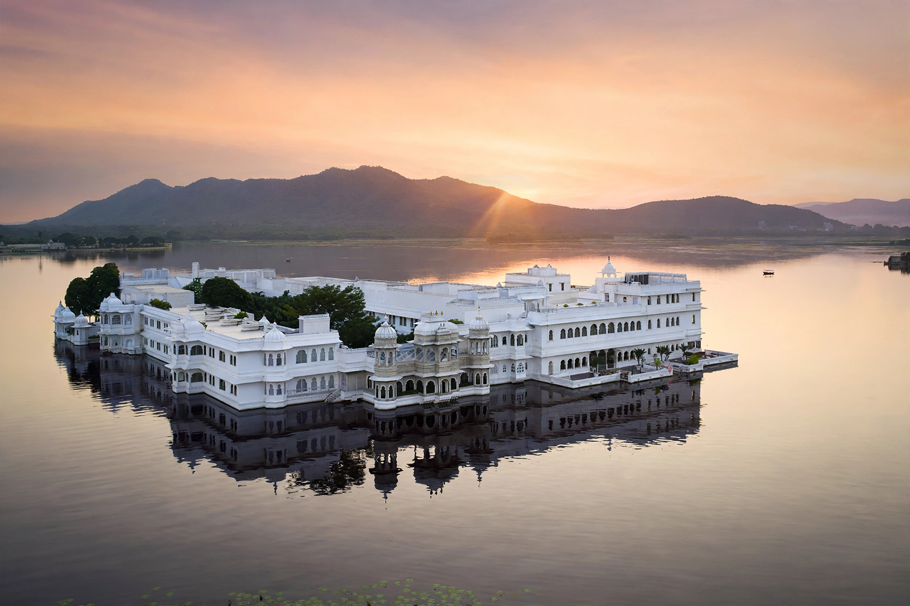

The Lake Palace (Taj Lake Palace) is a former royal palace, now a luxury hotel, built between 1743 and 1746 on the island of Jag Niwas in Lake Pichola, Udaipur, Rajasthan, India. Its white marble walls appear to float on the lake's surface.

| Location | Lake Pichola, Udaipur, India |
|---|---|
| Built | 1743–1746 |
| Architectural style | Rajput architecture |
| Owner/Operator | Taj Hotels |
Maharana Jagat Singh II of Mewar built the palace as a summer retreat, naming the island Jag Niwas after himself. Legend says he built it after being forbidden to visit a friend's island palace. During the Indian Rebellion of 1857 the palace sheltered European families fleeing Neemuch. In the 20th century it fell into disrepair before Bhagwat Singh converted it into a hotel in 1963; the Taj group took over management in 1971.
The palace featured prominently in the 1983 James Bond film Octopussy as the home of the title character, and has hosted royalty and celebrities including Queen Elizabeth II, Jacqueline Kennedy and Vivien Leigh. It is regularly ranked among the world's most romantic hotels, accessible only by boat.